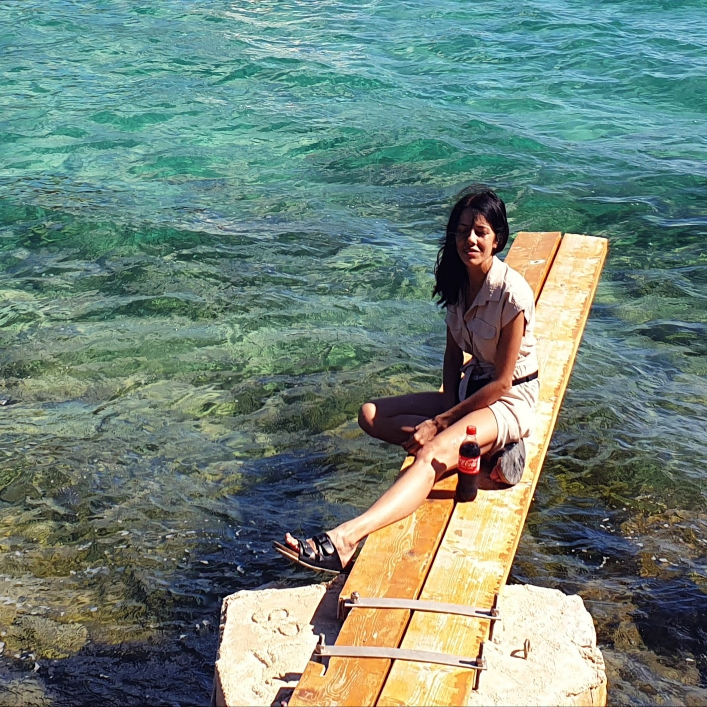

Hei !
Ich bin Bianca Richwin
Ich arbeite an der Schnittstelle von Gestaltung, Technik und Recherche. Mein Schwerpunkt liegt auf visueller Kommunikation, Print- und Digitaldesign sowie KI-gestützten Workflows.
Neben klassischer Mediengestaltung gehören auch Fotografie, digitale Projekte, meine Portal-Arbeiten und genealogische Recherche zu meinem Portfolio.
Mich interessieren Projekte, die Gestaltung mit Funktion, Struktur und einer klaren Idee verbinden.

Genealogie
Familienforschung, Quellenarbeit und digitale Archivprojekte.